For those wishing to follow along with the R-based demo in class, click here for the companion R script for this lecture.
MCMC is designed to sample from difficult-to-describe (e.g., multivariate, hierarchical) probability distributions.
In many/most cases, the posterior distribution for ecological problems is a difficult-to-describe probability distribution. Therefore, MCMC is the most common method we use for doing Bayesian inference.
MCMC is kind of magical in that it allows you to sample from probability distributions that are impossible to fully define mathematically! The MCMC approach uses random jumps in parameter space that eventually (after a warm-up period) end up sampling from the joint posterior distribution!
The key to MCMC is the following:
The probability of a successful jump in parameter space from point A to point B is proportional to the ratio of the target probability densities at these two points.
The probability of a successful jump in parameter space can be characterized as:
\(P(jump) \cdot P(accept)\)
That is: in order to jump, you need to propose a specific jump (according to some probability distribution) and then accept that jump in parameter space!
The ratio of jump probabilities can be characterized as:
\(\frac{P(jump_{a\rightarrow b})\cdot P(accept b|a)}{P(jump_{b\rightarrow a})\cdot P(accept a|b)}\)
For this procedure to (eventually) extract random samples from the posterior distribution, this ratio MUST be equal to the ratio of the posterior probabilities at points A and B:
\(\frac{Posterior(B)}{Posterior(A)}\)
If this rule is met, then in the long run the chain will explore each segment of parameter space in accordance with the posterior probability of that segment- thereby eventually capturing the entire posterior distribution (if run long enough).
Note: if the proposal distribution is symmetrical, then the probability of proposing a jump from A to B is the same as the probability of proposing a jump from B to A. Therefore, the proposal probabilities drop out of the above equation…
Surprisingly, MCMC is not that difficult to describe or even to implement (although implementing an efficient MCMC algorithm takes some advanced skills!). Let’s look at a simple MCMC algorithm.
Remember that MCMC samplers are just a type of random number generator. We can use MCMC to develop our own random number generator for a simple known distribution. In this example, we use MCMC to generate random numbers from a standard bivariate normal probability distribution. I chose this example because its properties are fully worked out mathematically, so we can compare MCMC results with the “true” distribution. We certainly don’t need an MCMC sampler for this example (we already have ‘perfect’ random number generators, like the one below). One way to do this would be to use the following code, which draws and visualizes an arbitrary number of independent samples from the bivariate standard normal distribution with a correlation parameter, \(\rho\).
This algorithm is essentially the same as the simulated annealing algorithm we discussed in the “optimization” lecture! The main difference: the “temperature” doesn’t decrease over time and the temperature parameter k is always set to 1.
The M-H algorithm can be expressed as:
\(P(accept B|A) = min(1,\frac{Posterior(B)}{Posterior(A)}\cdot \frac{P(b\rightarrow a)}{P(a\rightarrow b)})\)
Q: Does it make sense that this algorithm meets the basic rule of MCMC, that is, that the ratio of jump probabilities to/from any two points in parameter/model space is equal to the ratio of posterior probabilities evaluated at those two points?
# Simple example of MCMC sampling -----------------------
# first, let's build a function that generates random numbers from a bivariate standard normal distribution
rbvn<-function (n, rho){ #function for drawing an arbitrary number of independent samples from the bivariate standard normal distribution.
x <- rnorm(n, 0, 1)
y <- rnorm(n, rho * x, sqrt(1 - rho^2))
cbind(x, y)
}
# Now, plot the random draws from this distribution, make sure this makes sense!
bvn_true<-rbvn(10000,0.9)
par(mfrow=c(2,2))
plot(ts(bvn_true[,1]))
plot(ts(bvn_true[,2]))
hist(bvn_true[,1],40)
hist(bvn_true[,2],40)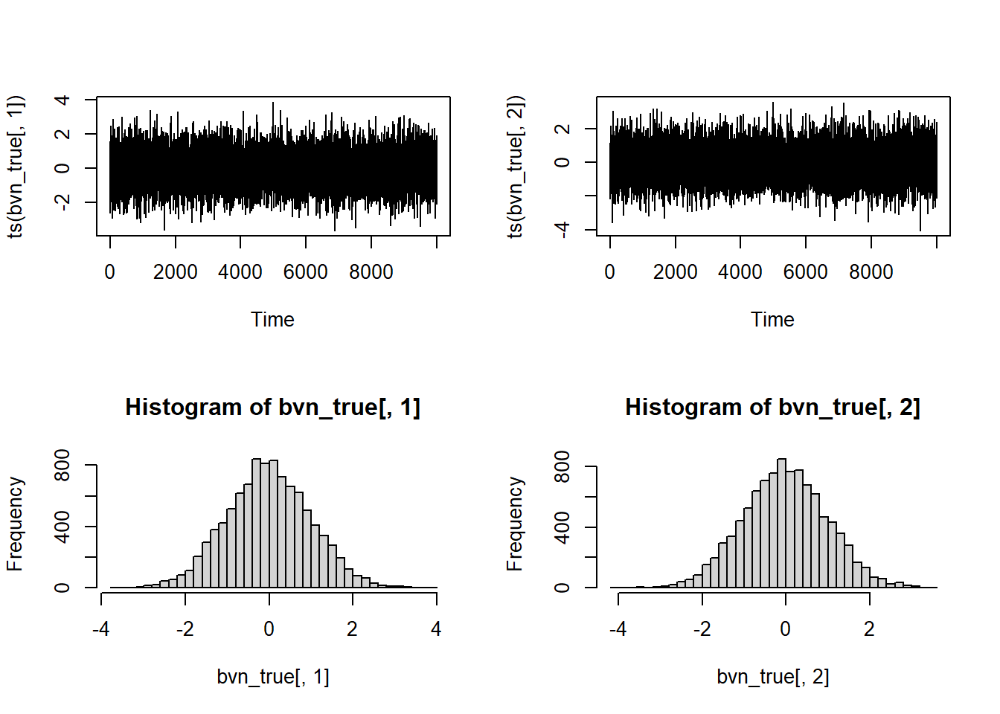
par(mfrow=c(1,1))These look like two normal distributions- but when we view them together we can visualize the correlation/dependence:
plot(bvn_true[,1],bvn_true[,2])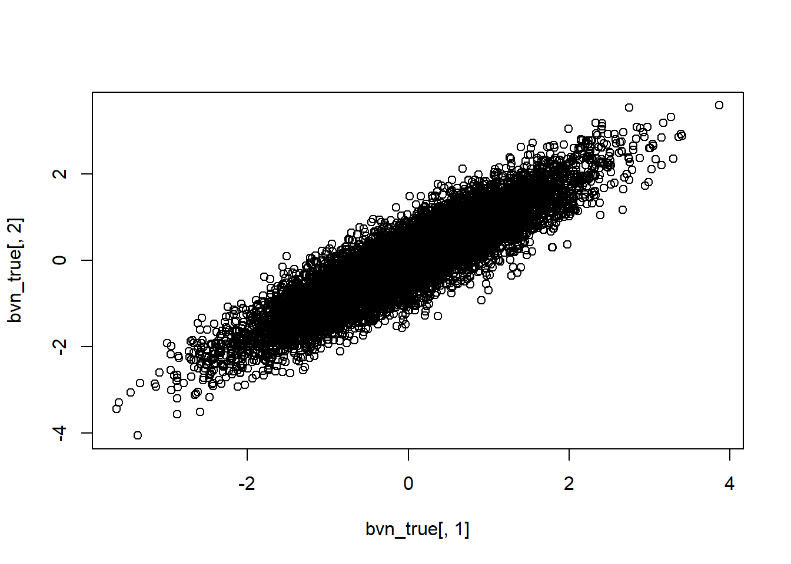
Here’s a function for visualizing the results from our various samplers:vis_mcmc2 <- function(mat){ # assume mat has 1 row per sample, and 2 columns (# params)
par(mfrow=c(3,ncol(mat)))
plot(mat,col=1:nrow(mat)) ; plot(mat,type="l")
plot(ts(mat[,1])) ; plot(ts(mat[,2]))
hist(mat[,1],40) ; hist(mat[,2],40)
par(mfrow=c(1,1))
}## Metropolis-Hastings implementation of bivariate normal sampler... ----------
proposal <- function(x) rnorm(1,x,0.4)
cond_prob <- function(this,xval,rho) dnorm(this,rho*xval,1-rho^2)
choose_mh <- function(prev,new,other,rho){
r = min(cond_prob(new,other,rho)/cond_prob(prev,other,rho),1)
ifelse(r>runif(1),new,prev)
}
metropolisHastings <- function (n, rho){ # an MCMC bivariate random number generator
mat <- matrix(NA,n,2) # matrix for storing the random samples
prev = c(0,0); mat[1,] <- prev # initial values for all parameters
for(i in 1:n){
for(j in 1:2) prev[j] <- choose_mh(prev[j],proposal(prev[j]),prev[setdiff(1:2,j)] ,rho)
mat[i,] <- prev
}
mat
}Then we can use the M-H sampler to get random samples from this known distribution…
# Test our M-H sampler
bvn_mh<-metropolisHastings(5000,rho=0.9)
vis_mcmc2(bvn_mh)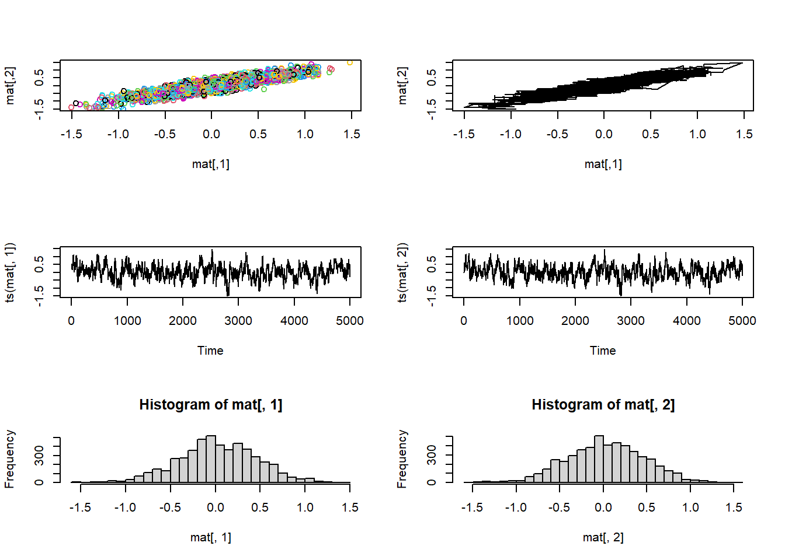
Q: Why does the MCMC routine produce ‘lower quality’ random numbers than the first (bivariate normal) sampler we built?
The M-H algorithm is simple and widely applicable. The downside is computational. Many proposal steps are rejected, and this leads to low efficiency. Strong autocorrelation in the MCMC samples can also mean very low effective sample size (ess) despite a large number of MCMC samples.
The Gibbs sampler is straightforward and efficient. Basically, the algorithm successively samples from the full conditional probability distribution – that is, the posterior distribution for arbitrary parameter i conditional on known values for all other parameters in the model. Unlike the M-H algorithm, there is no rejection of proposed jumps when we use the Gibbs sampler!
In many cases, we can’t work out the full posterior distribution for our model directly, but we CAN work out the conditional posterior distribution analytically if all parameters except for the parameter in question were known with certainty. This is true if we use conjugate priors for our model specification (what BUGS/JAGS tries to do!). Even if not, the full conditional is often tractable. Nonetheless, even if it’s not analytically tractable, we can use an M-H step as a last resort!
Q: Why is a Gibbs sampler usually more efficient than a pure M-H sampler?
In this example (same as before), we use a Gibbs Sampler to generate random numbers from a standard bivariate normal probability distribution. Notice that the Gibbs sampler is in many ways more simple and straightforward than the M-H algorithm.
# Simple example of a Gibbs sampler ----------------
# first, recall our 'true' bivariate normal sampler
vis_mcmc2(bvn_true)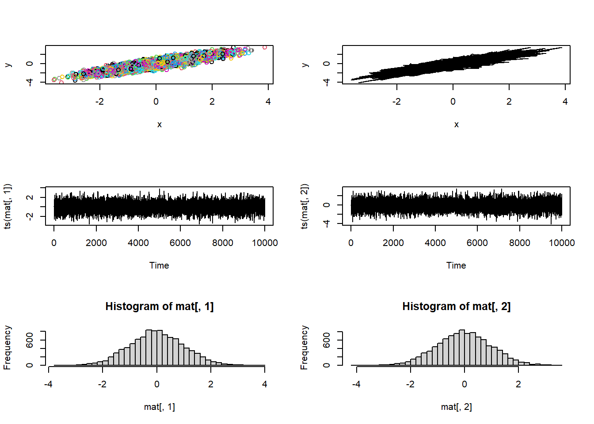
## Now construct a Gibbs sampler ---------------
cond_prob2 <- function(xval,rho) rnorm(1, rho * xval, sqrt(1 - rho^2)) # sample random value from full conditional
gibbs<-function (n, rho){ # a Gibbs sampler for bivariate normal
mat <- matrix(ncol = 2, nrow = n) # matrix for storing the random samples
prev <- c(0,0); mat[1, ] <- prev # initialize the markov chain
for (i in 2:n) {
prev[1] <- cond_prob2(prev[2],rho) # sample from full conditional
prev[2] <- cond_prob2(prev[1],rho)
mat[i,] <- prev
}
mat
}Then we can use the Gibbs sampler to get random samples from this known distribution…
# Test the Gibbs sampler ------------------
bvn_gbs <-gibbs(10000,0.9)
vis_mcmc2(bvn_gbs)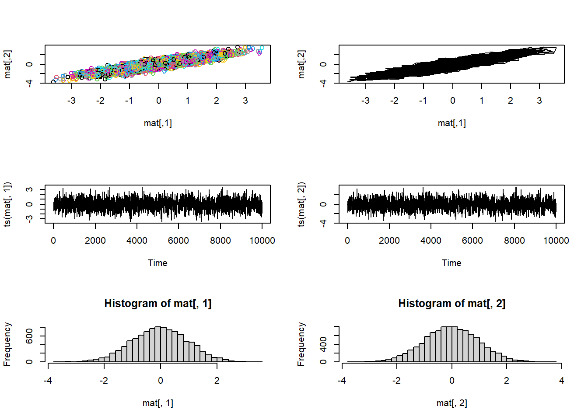
This looks pretty good! However, it is important to note that Gibbs samplers frequently result in chains with fairly high autocorrelation, where the effective sample size (ess) is much lower than the number of MCMC samples.
Hamiltonian Monte Carlo (HMC) is more mathematically complex than M-H or HMC. However, it has some very nice properties. Most importantly, the samples from HMC are much less correlated, so we need fewer samples in total. HMC is also very good at sampling even in high dimensional problems that are too slow or poorly mixed in a Gibbs sampler. The term “Hamiltonian” comes from physics, where the Hamiltonian equations describe an objects movement in space as a function of the relationship between kinetic energy and potential energy. Imagine the negative log-posterior as a frictionless surface we want to explore. We can think of the MCMC sample as a ball rolling in that space. We give the ball a little push in some direction (this is governed by the momemtum function), giving it kinetic energy. The ball might roll downhill, converting some of the potential energy into kinetic energy. At some point is starts rolling up again until all the kinetic energy is converted back into potential energy.
Basically, this algorithm forces the MCMC sampler to stay within higher-probability regions of parameter space (called the “typical set”), making for a sampler that is efficient even when sampling from high dimensions (dealing with the curse of dimensionality).
One restriction in HMC is that the parameter space must be continuous and differentiable. But there are tricks for using HMC even in cases where we have discrete elements of parameter space- basically we just need to integrate these discrete elements out of the likelihood. Which is not too difficult in many cases.
The tuning parameters in HMC include the step size and the number of sub-steps between HMC draws, known as ‘leap-frog’ steps. There is a widely used algorithm called the ‘no U-turn sampler’ (NUTS) that is often used to define these tuning parameters in practice.
The following code is modified from https://jonnylaw.rocks/posts/2019-07-31-hmc/. Law, Jonny. 2019. “Hamiltonian Monte Carlo in R.” July 31, 2019.
First of all, you will not in general be writing MCMC code from scratch, never mind building your own HMC samplers (probably!). The goal of this demonstration is understanding, not providing code for use in “real” analysis.
First, we need a function that evaluates the un-normalized log posterior density at any point in our 2D space:
rho = 0.9 # set correlation as a global constant
# compute the unnormalized log posterior
log_posterior <- function(x) dnorm(x[1],log=T) + dnorm(x[2],rho*x[1],1-rho^2,log=T)Here, x is a 2D vector. We are treating rho as a fixed quantity here. Note that it would be easy to compute a log posterior function that included some data. We would just need to add the log likelihood to the log prior! In this example, we are essentially sampling from a bivariate prior (thinking of each of the two dimensions as a free parameter).
Then we need a function that evaluates the gradient of the log posterior at any point in parameter space. The gradient is the first derivative of the un-normalized log posterior with respect to the k free parameters. Geometrically, the gradient is a vector field of dimension k that points in the direction of steepest ascent (ie, where the posterior is increasing most rapidly). This function outputs a vector.
library(pracma) # load package capable of computing gradient numerically at any point in parameter space
# compute the gradient of the log posterior density function at a point x
gradient <- function(x) pracma::grad(log_posterior,x)Technically we don’t need to use numerical methods to compute the gradient here- there is an analytical solution. But generally we will rely on numerical algorithms for complex posterior surfaces.
Then we write a function that implements the “leapfrog” step. Multiple leapfrog steps constitute a single HMC iteration. This function takes:
This function outputs a row vector with dx2 columns representing first position and then momenum.
# Ancillary code for HMC ----------
# modified from https://jonnylaw.rocks/posts/2019-07-31-hmc/
leapfrog_step <- function(gradient, step_size, position, momentum, d) {
momentum1 <- momentum + gradient(position) * 0.5 * step_size
position1 <- position + step_size * momentum1
momentum2 <- momentum1 + gradient(position1) * 0.5 * step_size
matrix(c(position1, momentum2), ncol = d*2)
}This next function simply runs a set of l leapfrog steps. This completes one full sample from the HMC algorithm. This function also returns a matrix with k rows and 2 columns (position and momentum).
leapfrogs <- function(gradient, step_size, l, position, momentum, d) {
for (i in 1:l) {
pos_mom <- leapfrog_step(gradient, step_size, position, momentum, d)
position <- pos_mom[seq_len(d)] # position is the first d elements of the row vector
momentum <- pos_mom[-seq_len(d)] # momentum is the final d elements of the row vector
}
pos_mom
}This next function computes the log of the acceptance probability of the full jump. We assume the momentum follows a standard normal distribution.
log_acceptance <- function(propPosition,
propMomentum,
position,
momentum,
log_posterior) {
log_posterior(propPosition) + sum(dnorm(propMomentum, log = T)) -
log_posterior(position) - sum(dnorm(momentum, log = T))
}We’re getting there. This function does one full HMC step. We give it our log_posterior and gradient functions, along with our step size, number of leapfrog steps, and a starting position.
hmc_step <- function(log_posterior, gradient, step_size, l, position) {
d <- length(position)
momentum <- rnorm(d) # initial momentum- a kick to get the sampler going
pos_mom <- leapfrogs(gradient, step_size, l, position, momentum, d) # position and momentum vectors
propPosition <- pos_mom[seq_len(d)] # separate into position and momentum vectors
propMomentum <- pos_mom[-seq_len(d)]
a <- log_acceptance(propPosition, propMomentum, position, momentum, log_posterior)
if (log(runif(1)) < a) { # this is a metropolis procedure!
propPosition
} else {
position
}
}Note that we don’t care about momentum- we only save the position information.
Finally, here’s a function to implement the full HMC algorithm:
hmc <- function(log_posterior, gradient, step_size, l, initP, m) {
out <- matrix(NA_real_, nrow = m, ncol = length(initP)) # initialize the output matrix
out[1, ] <- initP # get the sampler started
for (i in 2:m) {
out[i, ] <- hmc_step(log_posterior, gradient, step_size, l, out[i-1,]) # one HMC step
}
out # fully filled-in matrix of steps in parameter space
}Let’s try it out!
# Test the HMC sampler ------------------
bvn_hmc <-hmc(log_posterior, gradient, .2, 10, c(0,0), 1000)
vis_mcmc2(bvn_hmc)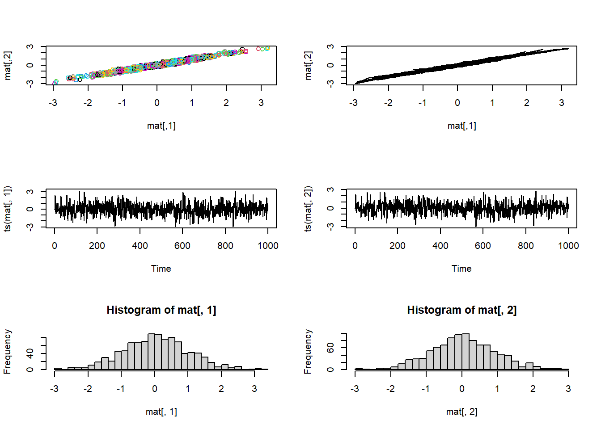
Of course, we would need to tune our step size and number of leapfrog steps to get an optimized sampler. But hopefully this gives you the idea!!Okay, let’s try it for a non-trivial problem, like the Myxomatosis example from the Bolker book!
# Using MCMC to fit the Myxomatosis example from the Bolker book --------------
library(emdbook)
MyxDat <- MyxoTiter_sum
Myx <- subset(MyxDat,grade==1)
head(Myx)## grade day titer
## 1 1 2 5.207
## 2 1 2 5.734
## 3 1 2 6.613
## 4 1 3 5.997
## 5 1 3 6.612
## 6 1 3 6.810Recall that we are modeling the distribution of measured titers (virus loads) for Australian rabbits. Bolker chose to use a Gamma distribution. Here is the empirical distribution:
# Visualize the Myxomatosis data for the 100th time!
hist(Myx$titer,freq=FALSE)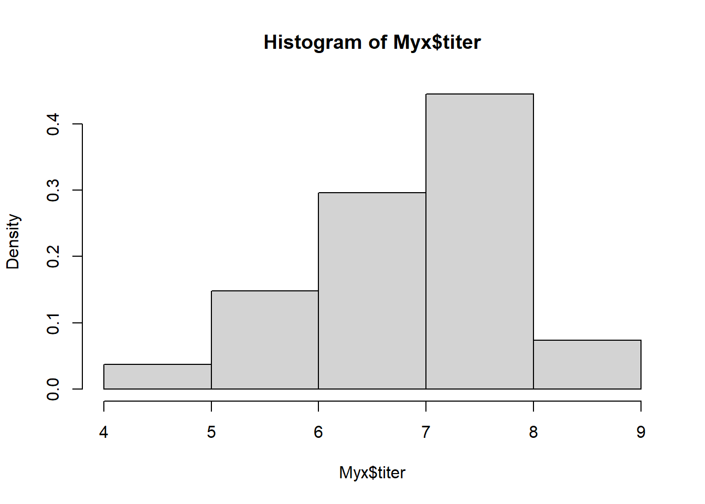
We need to estimate the gamma shape and rate parameters that best fit this empirical distribution. Here is one example of a Gamma fit to this distribution:
Recall that the 2-D (log) likelihood surface looks something like this:
# define 2-D parameter space!
shapevec <- seq(1,150,length=200) # divide parameter space into tiny increments
ratevec <- seq(0.5,30,length=200)
# define the likelihood surface -------------
loglik <- function(pars){
sum(dgamma(Myx$titer,shape=pars['shape'],rate=pars['rate'],log = T))
}
parmsurface <- expand.grid(shapevec,ratevec); colnames(parmsurface) <- c("shape","rate")
parmsurface$ll <- sapply(1:nrow(parmsurface), function(t) loglik(unlist(parmsurface[t,1:2])) )
library(ggplot2)
ggplot(parmsurface,mapping =aes(x=shape,y=rate)) + # Visualize the log likelihood surface
geom_raster(aes(fill=ll)) +
scale_fill_gradient(limits=c(-150,-37)) +
geom_contour(aes(z=ll),breaks=c(-45,-40) ,lwd=1.2)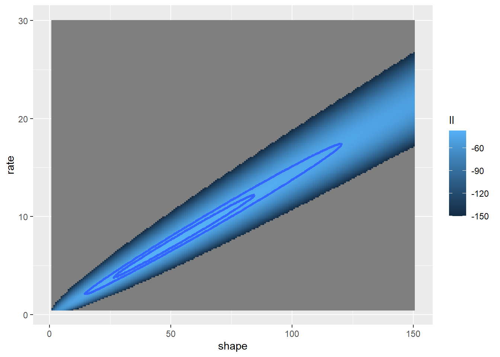
Here is an implementation of the M-H algorithm to find the joint posterior distribution!
First, we need a prior distribution for our parameters! Let’s assign relatively flat univariate priors for both of our parameters. In this case, we will assign a \(gamma(shape=0.001,rate=0.001)\) for both parameters (which has a mean of 1 and very large variance- it is an uninformative prior… ):
# Function for returning the log prior probability density for any 2D parameter vector
logprior <- function(params){
dgamma(params['shape'],0.001,0.001,log=T) +
dgamma(params['rate'],0.001,0.001,log=T)
}
# curve(dgamma(x,shape=0.001,rate=0.001),3,100) # visualize gamma
# params <- c(shape=40,rate=7) # test function
# logprior(params)
parmsurface$pr <- sapply(1:nrow(parmsurface), function(t) logprior(unlist(parmsurface[t,1:2])) )
ggplot(parmsurface,mapping =aes(x=shape,y=rate)) + # Visualize the log likelihood surface
geom_raster(aes(fill=pr)) +
scale_fill_gradient(limits=c(-25,-13.14)) 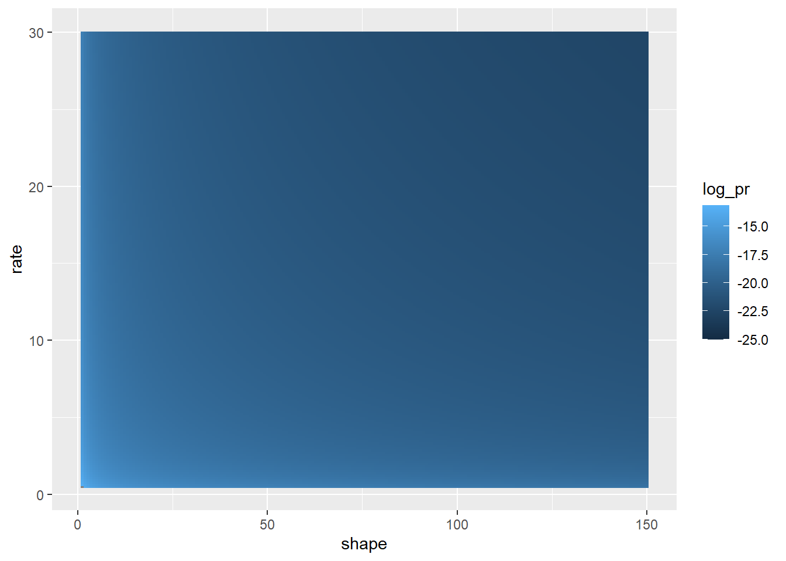
From this image you can tell that the prior is very uninformative here- the likelihood will easily overwhelm any information in this prior distribution.Note that we are also assuming that the shape and rate are independent in the prior (multiplicative probabilities for the joint prior).
However, this does not impose the same assumption on the posterior- parameter correlations in the likelihood can and will be reflected in the posterior distribution (driven by the likelihood surface, just like the Hessian matrix imposed correlations among parameters in maximum likelihood inference).
For Metropolis-Hastings MCMC (a simple and general, yet relatively inefficient, method), we need a function that can compute the ratio of posterior probabilities for any given jump in parameter space. Because we are dealing with a ratio of posterior probabilities, we do NOT need to compute the normalization constant.
Without the need for a normalization constant, we just need to compute the ratio of weighted likelihoods (that is, the likelihood weighted by the prior)
# Function for computing the ratio of posterior densities -----------------
eval_jump <- function(old,new){
oldnum <- loglik(old) + logprior(old) # compute likelihood and prior density at old guess
newnum <- loglik(new) + logprior(new) # compute likelihood and prior density at new guess
c(diff= unname(newnum-oldnum) ) # compute ratio of weighted likelihoods (log scale)
}
params <- c(shape=37,rate=6)
old <- params # test function
new <- c(shape=39,rate=7)
eval_jump(old,new)## diff
## -19.84934For M-H, we also need a function for making new guesses, or jumps in parameter space- this is our ‘proposal distribution’.
# Define proposal distribution --------------------------
# use bivariate normal distribution to make a guess
jump_vcv <- matrix(c(1,0.3,0.3,0.4),ncol=2) # in real life, we would tune these parameters to optimize our sampler
# function for making new guesses
make_guess <- function(old){
newguess <- mvtnorm::rmvnorm(1,old,jump_vcv)[1,]
ifelse(newguess<0.001,0.001,newguess) # make sure we don't get any negative guesses. This induces an asymmetry, but we won't worry about that right now as it is unlikely to influence our MCMC samples
}
params## shape rate
## 37 6make_guess(params) # set a new "guess" near to the original guess## shape rate
## 35.569213 5.438909We also need a starting point:
# Set a starting point in parameter space -------------------
startingvals <- c(shape=75,rate=4) # starting point for the algorithmLet’s play with the different functions we have so far…
# Try our new functions ------------------
newguess <- make_guess(startingvals) # take a jump in parameter space
newguess## shape rate
## 73.162297 2.566191eval_jump(startingvals,newguess) # difference in posterior ratio## diff
## -559.3122Now let’s visualize the Metropolis-Hastings routine:
# Visualize the Metropolis-Hastings routine: ---------------
mh <- function(n,st){ # function for doing M-H MCMC
chain <- matrix(nrow=n,ncol=length(st),dimnames=list(1:n,names(st)))
chain[1,] <- startingvals
for(i in 2:n){
prop <- make_guess(chain[i-1,]) # proposal jump
prob_accept <- min(1,exp(eval_jump(chain[i-1,],prop)) )
if(prob_accept >= runif(1)){ # choose the jump in accordance with its relative probability under the posterior
chain[i,] = prop
}else{
chain[i,] <- chain[i-1,]
}
}
chain
}
chain= mh(100,startingvals)
# visualize!
parmsurface$post <- parmsurface$ll + parmsurface$pr
post_plot = ggplot(parmsurface,mapping =aes(x=shape,y=rate)) + # Visualize the log likelihood surface
geom_raster(aes(fill=post)) +
scale_fill_gradient(limits=c(-150,-57)) +
geom_contour(aes(z=post),breaks=c(-65,-59) ,lwd=1.2)
post_plot + geom_path(data=chain,aes(x=shape,y=rate),lwd=1.2,col="white")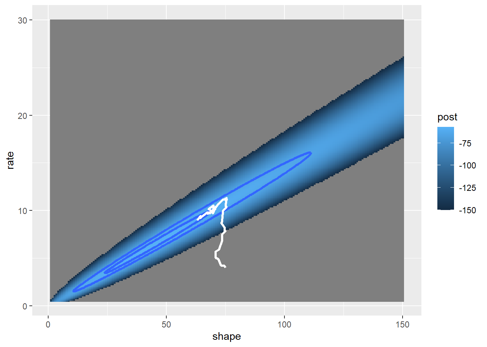
Let’s run it for longer…
# Get more MCMC samples --------------
chain= mh(1000,startingvals)
post_plot + geom_path(data=chain,aes(x=shape,y=rate),lwd=1.2,col="white")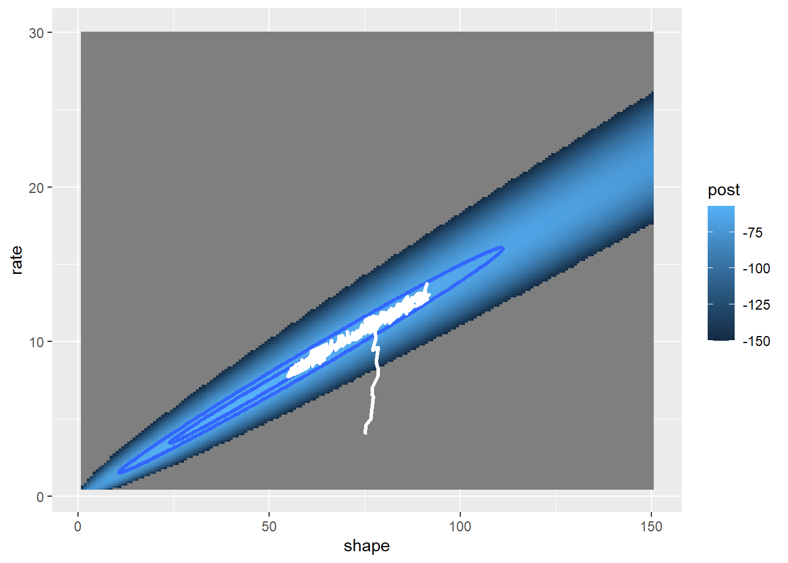
How about for even longer??
# And more... -------------------
chain= mh(10000,startingvals)
post_plot + geom_path(data=chain,aes(x=shape,y=rate),lwd=1.2,col="white")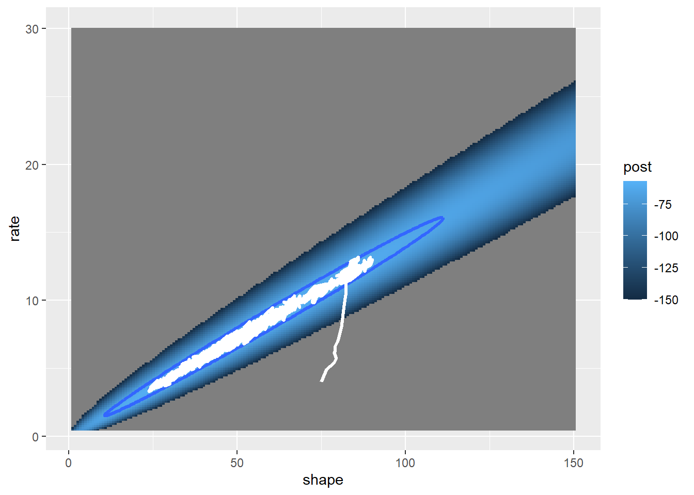
This looks better! The search algorithm is finding the high-likelihood parts of parameter space pretty well!
Now, let’s look at the chain for the “shape” parameter
# Evaluate "traceplot" for the MCMC samples... ---------------------
## Shape parameter
plot(1:nrow(chain),chain[,'shape'],type="l",main="shape parameter",xlab="iteration",ylab="shape")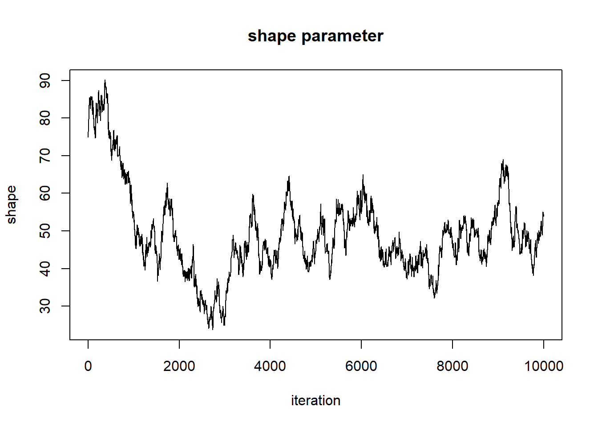
And for the rate parameter…
## Rate parameter
plot(1:nrow(chain),chain[,'rate'],type="l",main="rate parameter",xlab="iteration",ylab="rate")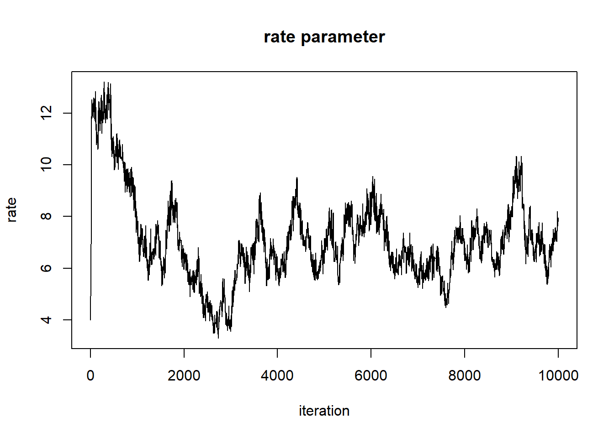
Can we say that these chains have converged on the posterior distribution??
First of all, the beginning of the chain “remembers” the starting value, and is therefore not a stationary distribution. We need to remove the first part of the chain, called the ‘burn-in’, or ‘warm-up’ period.
# Remove "burn-in" (allow MCMC routine some time to get to the posterior) --------------
chain <- chain[-c(1:1000),] # remove first 1000 sample
plot(1:nrow(chain),chain[,'shape'],type="l",main="shape parameter",xlab="iteration",ylab="shape")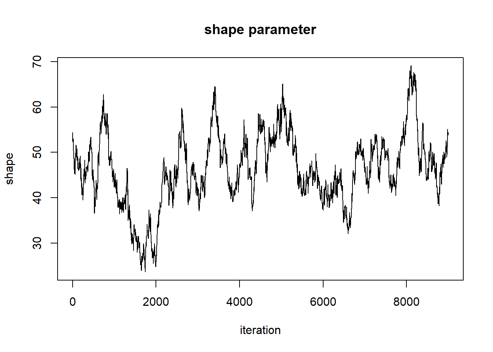
plot(1:nrow(chain),chain[,'rate'],type="l",main="rate parameter",xlab="iteration",ylab="rate")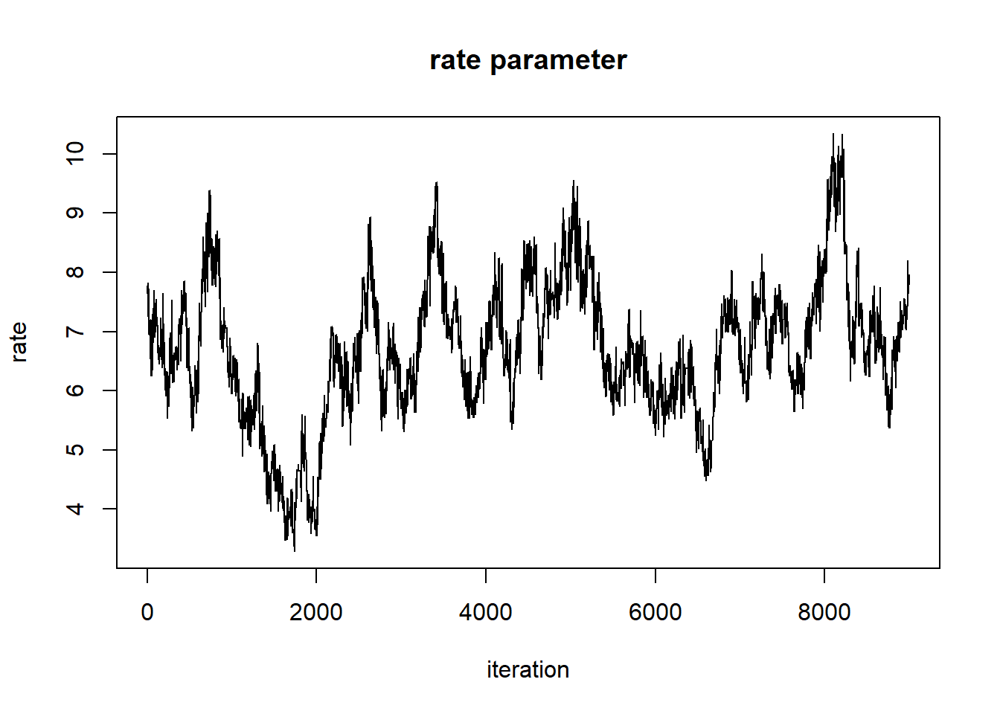
But it still doesn’t look all that great. Let’s tune our proposal distribution, and run the chain for even longer, and see if we get something that looks more like a proper random number generator (white noise)…
# Change the VCV for proposal distribution
jump_vcv <- matrix(c(1.1,0.7,0.7,.8),ncol=2)
# Try again- run for much longer ---------------------
chain= mh(100000,startingvals) # takes ~10 seconds to runLet’s first remove the first 25000 samples as a burn-in
# Use longer "burn-in" and thin ------------------
chain <- chain[-c(1:25000),] # remove first 25000 sample
chain <- chain[seq(1,nrow(chain),5),] # keep every fifth sampleNow, let’s look at the chains again
plot(1:nrow(chain),chain[,'shape'],type="l",main="shape parameter",xlab="iteration",ylab="shape")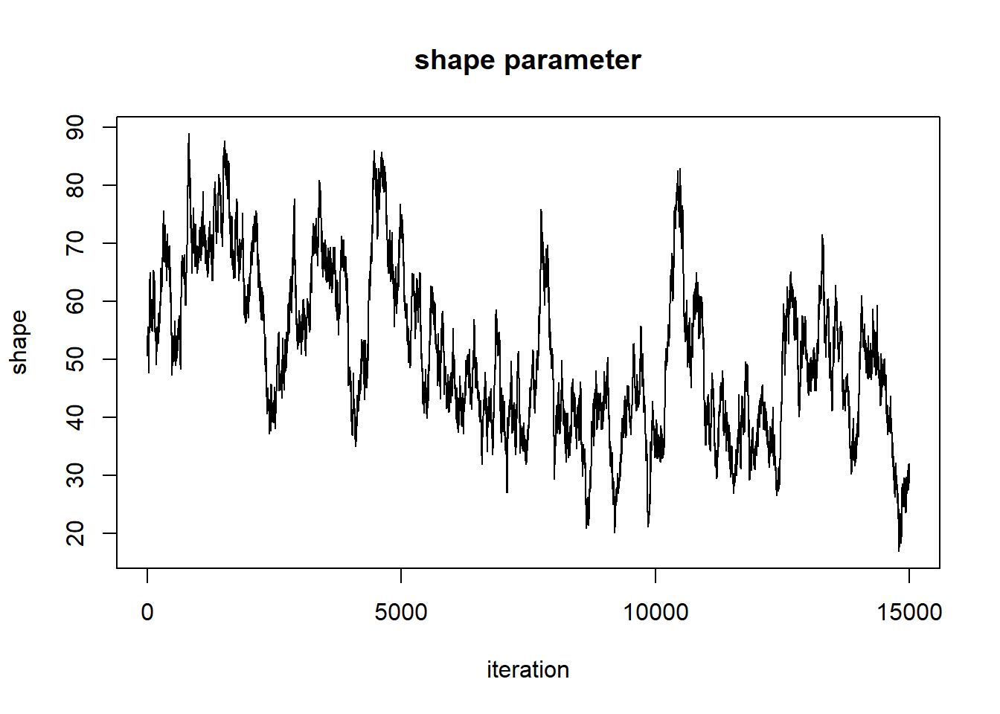
plot(1:nrow(chain),chain[,'rate'],type="l",main="rate parameter",xlab="iteration",ylab="rate")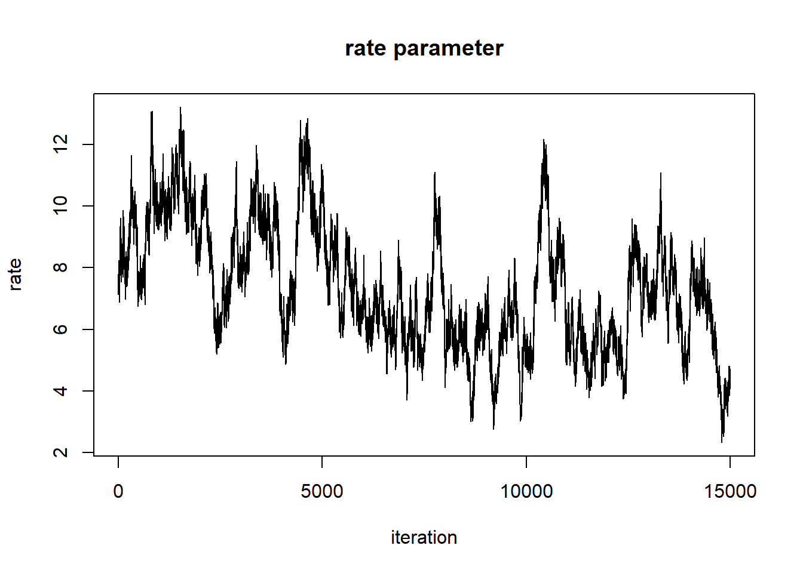
When evaluating these trace plots, we are hoping to see a “stationary distribution” that looks like white noise. This trace plot still has high autocorrelation. We would need to tune our proposal distribution even more to do a better job.
acf(chain[,"shape"],lag.max=500)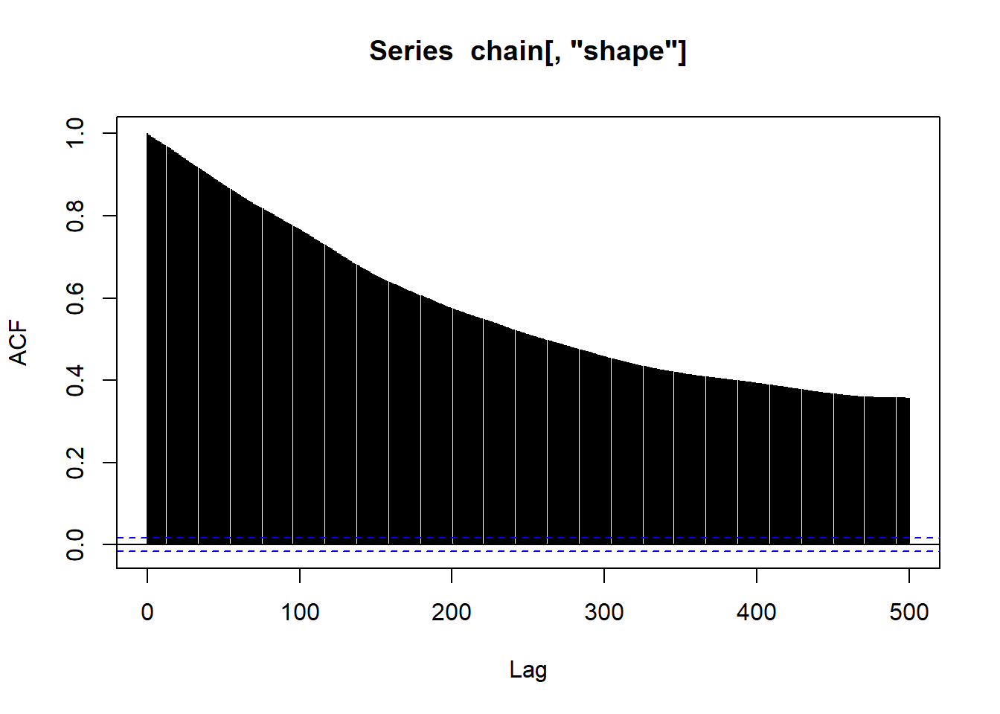
Let’s examine our posterior distribution, despite the less-than-perfect performance of our MCMC algorithm.
# Visualize the posterior!
plot(density(chain[,'rate']),main="rate parameter",xlab="rate")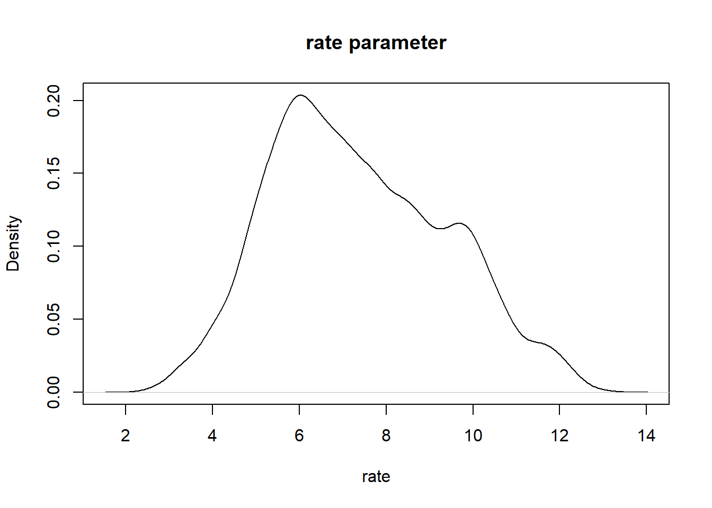
plot(density(chain[,'shape']),main="shape parameter",xlab="shape")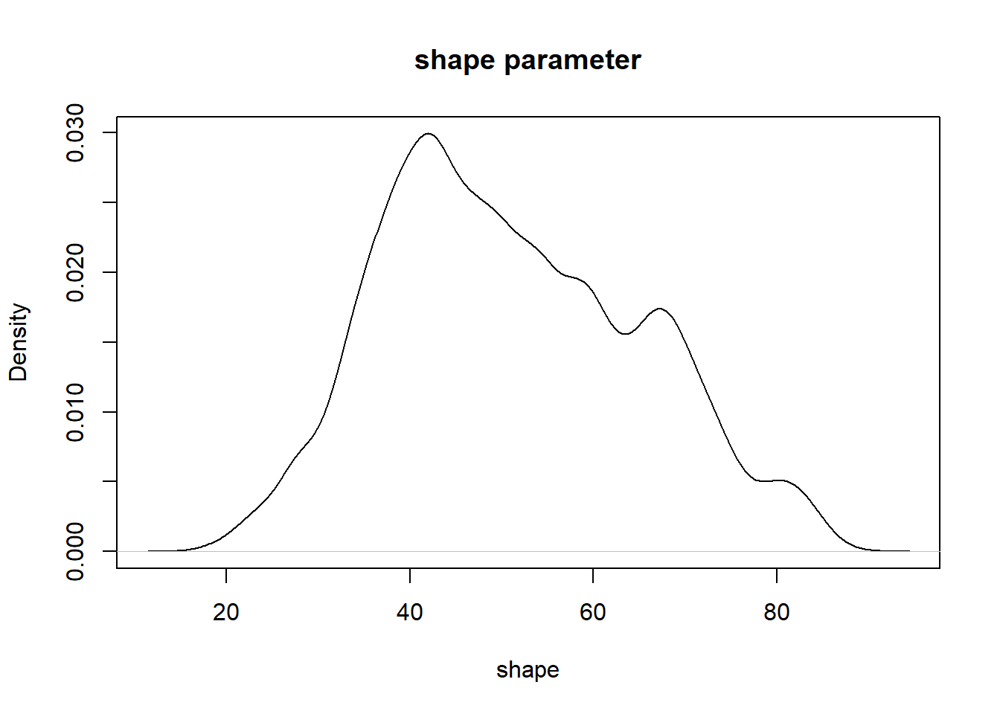
And we can visualize as before.
# More visual posterior checks... -----------------
vis_mcmc2(chain)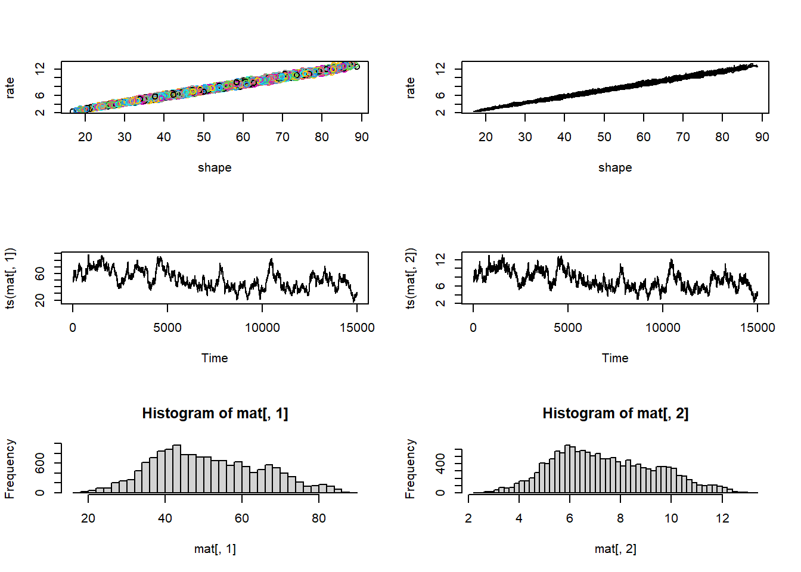
Hopefully it is clear that the Metropolis-Hastings MCMC method could be modified to fit arbitrary numbers of free parameters for arbitrary models. However, the M-H algorithm by itself is not necessarily the most efficient- and it can be very difficult to develop good proposal distributions for multidimensional parameter space.
The Gibbs sampler tends to be a more effective sampler for multi-dimensional joint posterior distributions. Gibbs samplers can be implemented in the BUGS language (Bayesian Inference Using Gibbs Sampling) – one of the first widely adopted probabilistic programming languages (PPLs).
BUGS implementations (e.g., JAGS, which is still widely used in ecology and environmental science) actually use a combination of M-H and Gibbs sampling!
The popular open-source PPL ‘stan’ uses Hamiltonian Monte Carlo to explore multidimensional parameter space much more efficiently.
Finally, let’s build a sampler for our favorite Myxomatosis example! To do this, we will use the ‘stan’ language. To run stan, we will use ‘command’ stan via package ‘cmdstanr’.
To get started with cmdstanr, follow the instructions here: https://mc-stan.org/cmdstanr/articles/cmdstanr.html. It should just take a couple minutes. We will work with stan in lab 4.
The stan language looks a bit like R, but there are many key differences as well.
Here is the myxomatosis example, as implemented in the PPL ‘stan’:
data {
int<lower=0> N;
vector[N] titer;
}
parameters {
real<lower=0> shape;
real<lower=0> rate;
}
model {
shape ~ gamma(0.001,0.001); // prior on shape
rate ~ gamma(0.001,0.001); // prior on rate
titer ~ gamma(shape, rate); // likelihood
}
Note that we use double forward slash to indicate comments in stan.
You first need to save this file to your working directory using the file extension “.stan”.
I named my file “myx.stan”.
Now that we have the stan model packaged in a text file, we compile the stan model (stan is a compiled language):
library(cmdstanr)
mod1 <- cmdstan_model("myx.stan") # Compile stan modelbundle the data into a single list object that contains all the relevant data referenced in the stan code:
# Encapsulate the data into a single "list" object ------------------
stan_data <- list(
N = nrow(Myx),
titer = Myx$titer
)Now we can run our compiled sampler!
# Run stan ------------------
fit1 <- mod1$sample(
data = stan_data,
chains = 4,
iter_warmup = 200,
iter_sampling = 500
)## Running MCMC with 4 sequential chains...
##
## Chain 1 Iteration: 1 / 700 [ 0%] (Warmup)
## Chain 1 Iteration: 100 / 700 [ 14%] (Warmup)
## Chain 1 Iteration: 200 / 700 [ 28%] (Warmup)
## Chain 1 Iteration: 201 / 700 [ 28%] (Sampling)
## Chain 1 Iteration: 300 / 700 [ 42%] (Sampling)
## Chain 1 Iteration: 400 / 700 [ 57%] (Sampling)
## Chain 1 Iteration: 500 / 700 [ 71%] (Sampling)
## Chain 1 Iteration: 600 / 700 [ 85%] (Sampling)
## Chain 1 Iteration: 700 / 700 [100%] (Sampling)## Chain 1 Informational Message: The current Metropolis proposal is about to be rejected because of the following issue:## Chain 1 Exception: gamma_lpdf: Random variable is inf, but must be positive finite! (in 'C:/Users/KSHOEM~1/AppData/Local/Temp/RtmpuuTBo4/model-bda844bc26af.stan', line 13, column 2 to column 29)## Chain 1 If this warning occurs sporadically, such as for highly constrained variable types like covariance matrices, then the sampler is fine,## Chain 1 but if this warning occurs often then your model may be either severely ill-conditioned or misspecified.## Chain 1## Chain 1 finished in 0.0 seconds.
## Chain 2 Iteration: 1 / 700 [ 0%] (Warmup)
## Chain 2 Iteration: 100 / 700 [ 14%] (Warmup)
## Chain 2 Iteration: 200 / 700 [ 28%] (Warmup)
## Chain 2 Iteration: 201 / 700 [ 28%] (Sampling)
## Chain 2 Iteration: 300 / 700 [ 42%] (Sampling)
## Chain 2 Iteration: 400 / 700 [ 57%] (Sampling)
## Chain 2 Iteration: 500 / 700 [ 71%] (Sampling)
## Chain 2 Iteration: 600 / 700 [ 85%] (Sampling)
## Chain 2 Iteration: 700 / 700 [100%] (Sampling)## Chain 2 Informational Message: The current Metropolis proposal is about to be rejected because of the following issue:## Chain 2 Exception: gamma_lpdf: Random variable is inf, but must be positive finite! (in 'C:/Users/KSHOEM~1/AppData/Local/Temp/RtmpuuTBo4/model-bda844bc26af.stan', line 13, column 2 to column 29)## Chain 2 If this warning occurs sporadically, such as for highly constrained variable types like covariance matrices, then the sampler is fine,## Chain 2 but if this warning occurs often then your model may be either severely ill-conditioned or misspecified.## Chain 2## Chain 2 finished in 0.0 seconds.
## Chain 3 Iteration: 1 / 700 [ 0%] (Warmup)
## Chain 3 Iteration: 100 / 700 [ 14%] (Warmup)
## Chain 3 Iteration: 200 / 700 [ 28%] (Warmup)
## Chain 3 Iteration: 201 / 700 [ 28%] (Sampling)
## Chain 3 Iteration: 300 / 700 [ 42%] (Sampling)
## Chain 3 Iteration: 400 / 700 [ 57%] (Sampling)
## Chain 3 Iteration: 500 / 700 [ 71%] (Sampling)
## Chain 3 Iteration: 600 / 700 [ 85%] (Sampling)
## Chain 3 Iteration: 700 / 700 [100%] (Sampling)## Chain 3 Informational Message: The current Metropolis proposal is about to be rejected because of the following issue:## Chain 3 Exception: gamma_lpdf: Random variable is 0, but must be positive finite! (in 'C:/Users/KSHOEM~1/AppData/Local/Temp/RtmpuuTBo4/model-bda844bc26af.stan', line 13, column 2 to column 29)## Chain 3 If this warning occurs sporadically, such as for highly constrained variable types like covariance matrices, then the sampler is fine,## Chain 3 but if this warning occurs often then your model may be either severely ill-conditioned or misspecified.## Chain 3## Chain 3 finished in 0.0 seconds.
## Chain 4 Iteration: 1 / 700 [ 0%] (Warmup)
## Chain 4 Iteration: 100 / 700 [ 14%] (Warmup)
## Chain 4 Iteration: 200 / 700 [ 28%] (Warmup)
## Chain 4 Iteration: 201 / 700 [ 28%] (Sampling)
## Chain 4 Iteration: 300 / 700 [ 42%] (Sampling)
## Chain 4 Iteration: 400 / 700 [ 57%] (Sampling)
## Chain 4 Iteration: 500 / 700 [ 71%] (Sampling)
## Chain 4 Iteration: 600 / 700 [ 85%] (Sampling)
## Chain 4 Iteration: 700 / 700 [100%] (Sampling)## Chain 4 Informational Message: The current Metropolis proposal is about to be rejected because of the following issue:## Chain 4 Exception: gamma_lpdf: Random variable is inf, but must be positive finite! (in 'C:/Users/KSHOEM~1/AppData/Local/Temp/RtmpuuTBo4/model-bda844bc26af.stan', line 13, column 2 to column 29)## Chain 4 If this warning occurs sporadically, such as for highly constrained variable types like covariance matrices, then the sampler is fine,## Chain 4 but if this warning occurs often then your model may be either severely ill-conditioned or misspecified.## Chain 4## Chain 4 finished in 0.0 seconds.
##
## All 4 chains finished successfully.
## Mean chain execution time: 0.0 seconds.
## Total execution time: 0.7 seconds.fit1$summary()## # A tibble: 3 × 10
## variable mean median sd mad q5 q95 rhat ess_bulk ess_tail
## <chr> <dbl> <dbl> <dbl> <dbl> <dbl> <dbl> <dbl> <dbl> <dbl>
## 1 lp__ -38.8 -38.4 1.08 0.741 -41.0 -37.8 1.00 520. 498.
## 2 shape 48.9 47.7 13.6 13.0 29.9 74.2 1.01 308. 237.
## 3 rate 7.06 6.88 1.98 1.90 4.31 10.7 1.01 308. 234.samples <- fit1$draws(format="draws_df")
bayesplot::mcmc_trace(samples,"shape")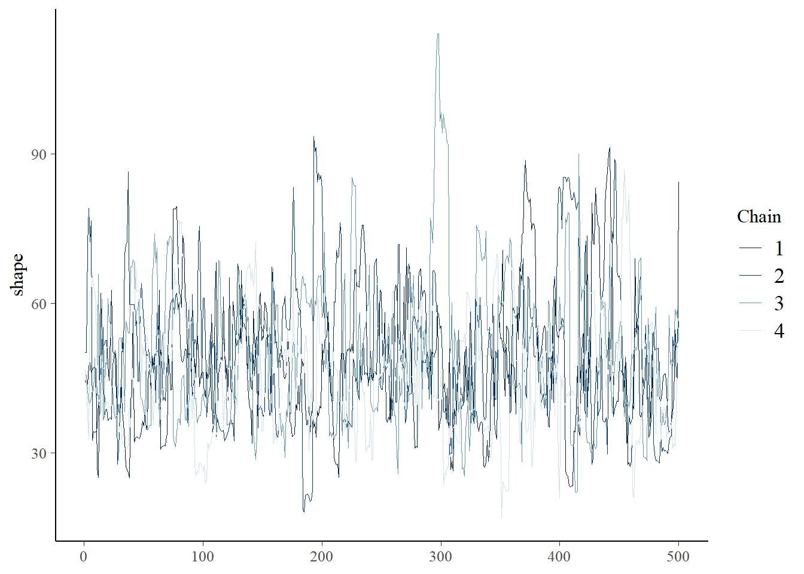
bayesplot::mcmc_trace(samples,"rate")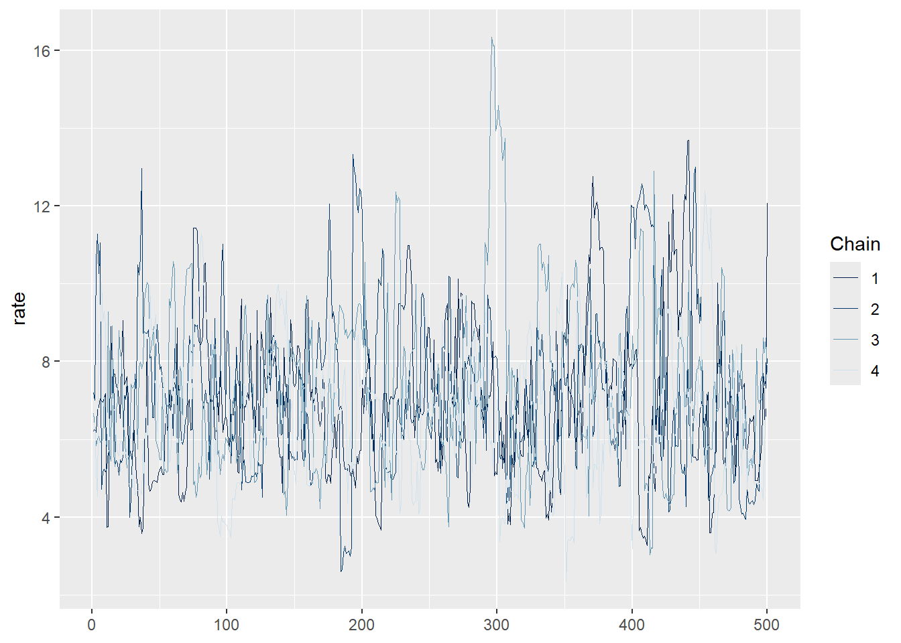
A couple things you might notice right off the bat: the HMC chain looks much less autocorrelated than our custom M-H sampler. This will generally be the case, since HMC is much more efficient than M-H in general. Also, we only ran 500 iterations, unlike the 100,000 iterations of the M-C algorithm.acf(samples$shape,lag.max=100)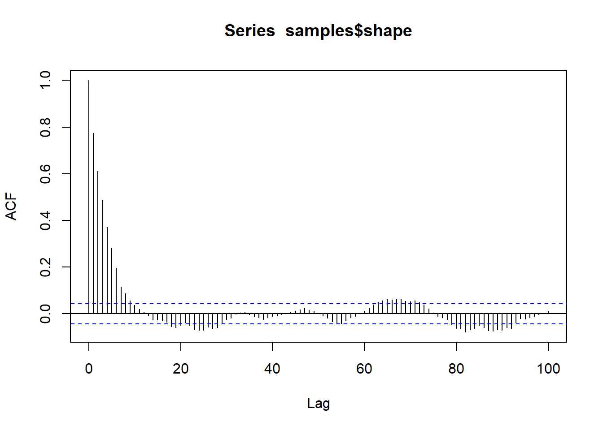
The difference in autocorrelation is remarkable, and illustrates the advantages of HMC.This is probably a good time to talk about convergence of MCMC chains on the stationary posterior distribution. The HMC plots look pretty good: we want to see white noise, and we want to see chains that look similar to one another.
The first check is just visual- we look for the following to assess convergence:
One simple and intuitive convergence diagnostic is the Gelman-Rubin diagnostic, also known as the “potential scale reduction factor” or “Rhat” which assesses whether chains are more different from one another than they should be on the basis of simple Monte Carlo error. The Rhat statistic is reported in the stan summary table:
# Run convergence diagnostics ------------------
fit1$summary()## # A tibble: 3 × 10
## variable mean median sd mad q5 q95 rhat ess_bulk ess_tail
## <chr> <dbl> <dbl> <dbl> <dbl> <dbl> <dbl> <dbl> <dbl> <dbl>
## 1 lp__ -38.8 -38.4 1.08 0.741 -41.0 -37.8 1.00 520. 498.
## 2 shape 48.9 47.7 13.6 13.0 29.9 74.2 1.01 308. 237.
## 3 rate 7.06 6.88 1.98 1.90 4.31 10.7 1.01 308. 234.In general, we like to see values of 1.01 or lower - so we might consider running our stan model for a bit longer.
We will play around with stan much more in lab!.